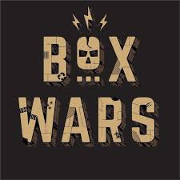

interests and Hobbies
- All things cardboard and crafts!
I personally believe there is nothing you can't accomplish with a bit of glue, corrigated sheetpaper, and creativity.
 - Laserdisc players and other vintage tech
Endless facination with older tech and their history. They just don't make them like they used to.

- Indie games
As a lifelong superfan of all games and an aspiring game-maker, nothing inspires me more than other creative projects
- Drawing and sketching
My number one hobby and talent. You'll often find me doodling in the margins of all my notes!
- Animation
No movies have captivated me in the same way the picture's like studio Ghibli's can.